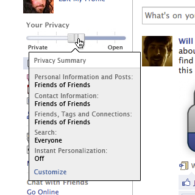
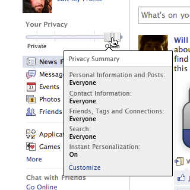
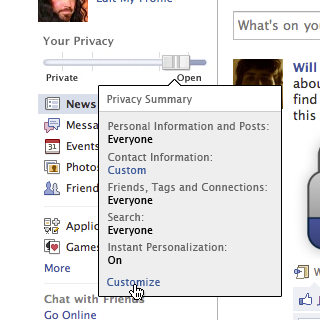

-
1 - Facebook's privacy options are little-used and overcomplicated
Facebook has a
bewildering number of privacy settings.
As
Openbook shows, this results in many users sharing private details of their lives with the entire planet, without their knowledge or permission.
-
2 - We say: make privacy clear
Here's how we think Facebook should address this problem: Add a prominent privacy control to everyone's home page.
It's simple and it instantly communicates your privacy settings.
-
3 - More detail with just a click

Clicking the slider shows a quick breakdown of your current privacy settings.
-
4 - Dragging to the right makes everything public

Dragging to the right makes everything public. Dragging to the left makes everything private.
Simple. Just how it should be.
-
5 - As fine grained as you need

Users can still customize their settings in detail.
In addition, Facebook should publicly commit to never moving the user's slider to the right without their express permission.
-
6 - Let Facebook know!
Hey Facebook, we want:
Simple privacy controls
A commitment that you won't mess with them
Demaind control! Share this link: